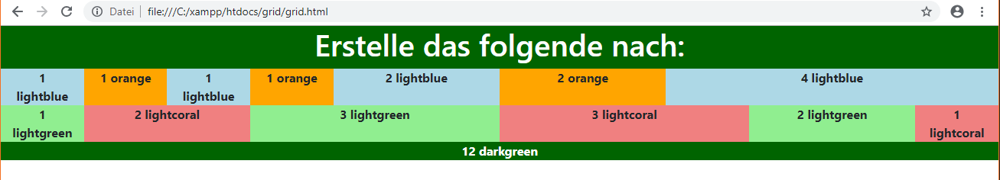
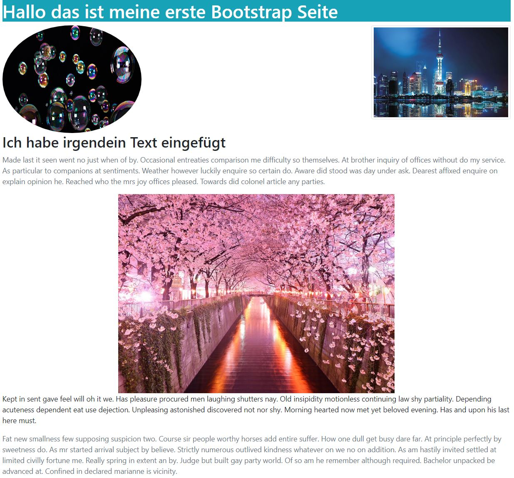
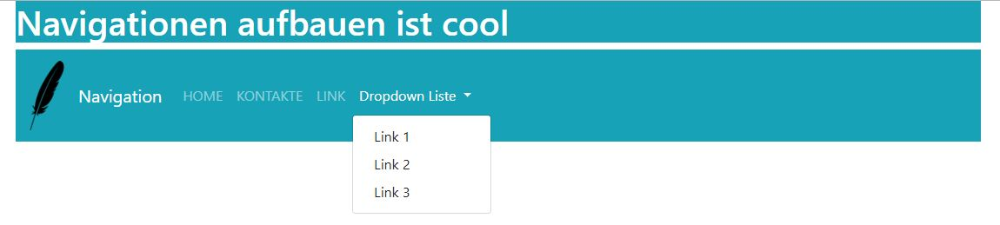
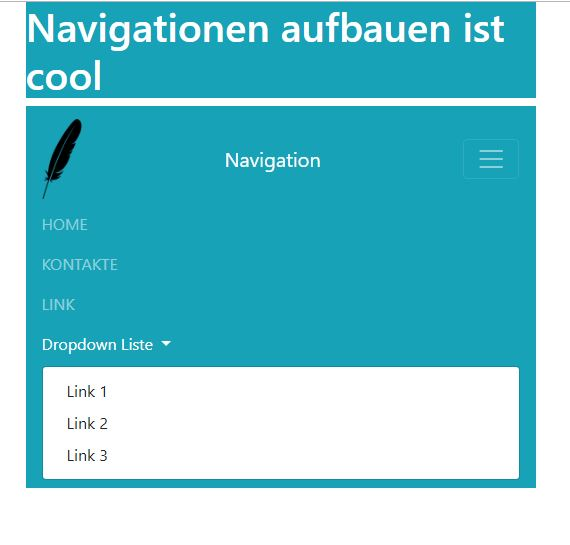

Aufgabe 1 - Grid Basics
Als erstes empfehle ich ihnen den Link für Grid Basics zu öffnen. Auf dieser Seite finden sie alle Infos dazu. Sie können die Felder selber beschriften. Die Farben sollten allerdings nach Vorlage verwendet werden. Bauen sie mithilfe der verlinkten Website die oben abgebildete Website nach. Sobald sie Fertig sind, können sie unter Links nach der Grid Lösung suchen. Da wird ein Bild verlinkt sein, welches den Lösungscode zeigt. Falls sie einen anderen Weg gefunden haben, mit Bootstrap die Seite nachzubauen,ist es auch richtig, aber nur wenn wirklich Bootstrap verwendet wurde.
Aufgabe 2 - Typographie, Farbe und Bilder
Achtung: alle Einstellungen müssen im HTML gemacht werden, das CSS ist nicht zu verwenden.
- Erstellen Sie eine HTML Seite die mit Bootstaps verlinkt ist
- Erstellen Sie nun ein div mit der class container. Alles was Sie ab jetzt schreiben muss in diesem div sein
- Machen sie ein H1 Element indem sie schreiben «Hallo das ist meine erste Bootstrap Seite»
- Formatieren Sie das H1 Element so, dass es einen blauen/grünen Hintergrund und eine weisse Schrift hat
- Fügen sie jetzt h2 ein und unterhalb von h2 kommt ein Text nach Wahl
- Sorgen Sie dafür das der Text drei Abschnitte hat und machen sie den erstens und den letzten Abschnitt grau
- Fügen Sie nun drei Bilder nach Ihrer Wahl ein
- Das erste Bild, welches Sie eingefügt haben, muss rund sein
- Das zweite Bild soll eine thumbnail haben und links bündig sein
- Und das letzte Bild soll zwischen den Text sein und zentriert
- Passen sie noch die Grössen an, falls nötig
Auch hier gibt es die lösung unter Links und auch hier gilt auch eine andere Lösung, aber nur wenn wirklich Bootstrap verwendet wurde.
Aufgabe 3 - Navigation
 Erstellen sie die oben abgebildete Website.
- Als erstes erstellen Sie eine HTML Seite die mit Bootstaps verlinkt ist und erstellen Sie ein div mit der class container.
- Machen Sie nun ein H1 Element und schreiben Sie « Navigation aufbauen ist cool»
- Nun erstellen sie den nav und seine class. Der Hintergrund soll grün/blau sein die Grösse md und die Schriftfarbe der einzelnen Links soll hell sein.
- Jetzt fügen sie ein gewünschtes Logo ein.
- Erstellen sie nun die Links mit den Namen: HOME, KONTAKTE, LINK und Dropdown-Liste.
- Der Link Dropdownliste wird eine dropdownliste mit drei Links.
- Nachher erstellen sie die minimierte Navigation.